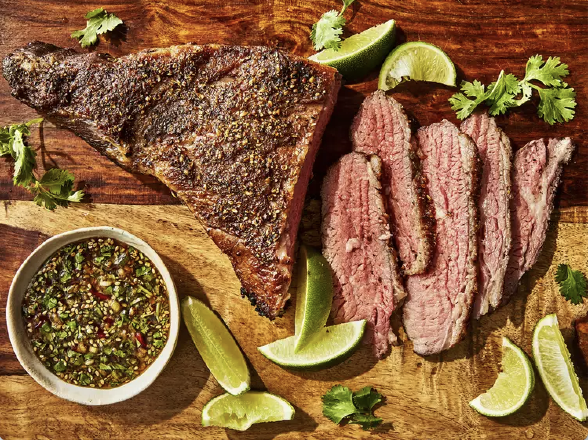

Sous Vide is wonderful for meal prepping or passive cooking. Tri tip, when cooked this way is incredibly tender. The flavor profile of this beef with the sauce is beautifully complex from acid of citrus, to the sweetness of brown sugar, heat of chiles, and umami of fish sauce.
| Active Time | Total Time | Servings |
|---|---|---|
| 20 mins | 3 hrs 15 mins | 4 |
Prepare a thermocirculator and water bath according to manufacturer's directions. Set thermocirculator to 135 degrees F (57 degrees C) and allow water bath to come up to temperature.
Using gloved hands, rub tri tip steak evenly with sesame oil and season evenly with 1 teaspoon salt. Transfer tri tip and butter to a large vacuum-sealable bag and arrange in a flat, even layer. Seal bag with a vacuum sealer according to manufacturer's directions.
Transfer vacuum-sealed tri tip to warm water bath with thermocirculator, cover vessel with aluminum foil to reduce evaporation, and cook 3 hours. Remove tri tip from bag (meat will be at 135 degrees F (57 degrees C) when pulled from water bath) and transfer to a rimmed sheet pan lined with paper towels and gently pat dry; discard bag and any juices reserved in bag.
Meanwhile prepare the chile-lime dipping sauce. Whisk together lime juice, fish sauce, brown sugar, garlic, ginger, green onions, sesame seeds, and toasted sesame oil in a small bowl until well combined. Cover dipping sauce with plastic wrap and set aside at room temperature until ready to use.
Season tri tip evenly with remaining 2 teaspoons salt, coriander seeds, and black peppercorns, pressing coriander and black peppercorns into tri tip to adhere.
Heat grapeseed oil in a large cast iron skillet over medium-high heat. Add tri tip to skillet, fat-cap-side down, and cook, until all sides are evenly seared and caramelized, 3 to 5 minutes per side.
Transfer tri tip to a large cutting board and let rest for 5 minutes before slicing against the grain into 1/4-inch-thick strips.
Serve steak with chile-lime dipping sauce for dipping, if desired.